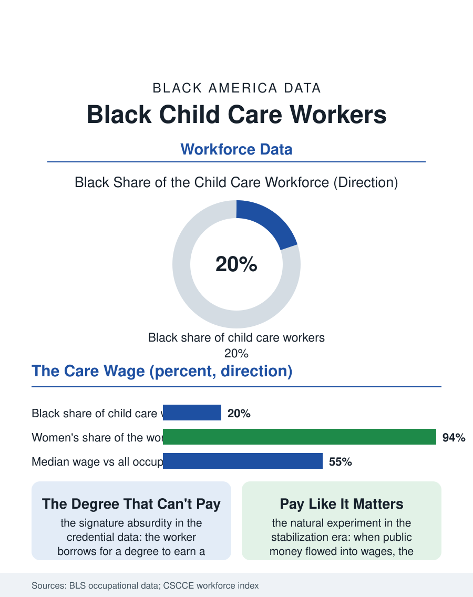

Black Employment
The Workforce Behind the Workforce: Black Child Care Workers
A fifth Black, ninety-four percent women, paid below the parking attendant to do the development literature's most important work. The child care file.

Child care workers are the workforce that makes all other work possible, and they are disproportionately Black women paid near the economy's floor to do it: roughly a fifth of the child care workforce is Black, at median wages that qualify many of them for the public benefits their own children's care requires subsidizing. The early education file's labor force is the subject of this article. This article reads the child care workforce file.
The Wage Paradox
The workforce data state the paradox without commentary: the child care worker's median wage sits in the lowest decile of the occupational wage distribution, below the parking attendant's and the animal caretaker's in the comparisons the workforce advocates cite, while the work's responsibility, the infant's brain in its most plastic years, is the development literature's highest. The racial composition compounds the paradox's terms: the workforce is over ninety percent women and disproportionately women of color, the Black share around a fifth, the immigrant share large and growing, and the wage structure descends from the labor's history, the domestic service file's exclusion from the labor standards' first drafts, the care of children having been priced as the natural overflow of women's nature rather than as work in the market's original accounting, an accounting the wage data have modernized only at the margins. The center-based and home-based tiers divide the workforce's conditions: the center's employee, with the chain and the public pre-K program's salary scales at the top, against the family child care provider, the home-based business of the business file, whose effective hourly wage, computed over the day the licensing clock runs, frequently falls below the center's floor.
Credentials, Ratios, and the Subsidy Machine
The credential file presses the workforce from the quality side: the degree and certificate requirements the quality rating systems reward, the Child Development Associate credential as the floor and the bachelor's as the aspiration, are priced against the wage the credential commands, producing the file's signature absurdity, the worker borrowing for a degree to earn a wage that cannot service the loan, with the scholarship and apprenticeship programs, the T.E.A.C.H. model and its imitators, designed precisely to break the arithmetic by paying the tuition against the retention. The subsidy system is the workforce's paymaster at one remove: the child care assistance rates the states set, benchmarked by statute to the market's own low prices, cap the center's revenue and therefore the wage, so that the wage file is, in the end, a public budget file, and the states' recent rate reforms and the pandemic era's stabilization grants, which flowed substantially into wages while they lasted, constitute the file's natural experiment in what the wage does when the public pays like it means it: the workforce stabilized, the classrooms reopened, and the grants' expiration returned the file to its baseline arithmetic on schedule.
The Workforce Behind the Workforce
The child care file closes on the multiplier the economists of care have made the file's frame: every child care worker enables the labor force participation of several parents, so that the workforce's wage and stability are infrastructure in the strict sense, and its shortage, the classrooms closed for want of staff in the current data's standing crisis, propagates through the whole economy's labor supply as a bridge closure would through a road network. The Black workforce's position in that infrastructure is the file's historical rhyme: the women who raised the nation's children in its households for three centuries, unpaid and then underpaid, staff its nurseries now at the wage the market sets for the work it has never honestly priced, and the profession's own organizing, the unions and the provider associations whose growth is the file's trend, presses the re-pricing with the development science as its brief. The bureau counts the workforce near a million, a fifth of it Black. The file's last entry is the arithmetic the parent at the door performs without knowing it: the person teaching their child to speak is paid less than the person who parks their car, and the society that accepts the ratio has announced, in its wage table, what it believes a child's first teacher is worth, an announcement the Black workforce has been receiving, and answering with its presence anyway, for as long as the table has been published.
More in Black Employment
The Black Unemployment Rate: The Two-to-One Pattern
Black unemployment runs at roughly twice the White rate — 5.5 percent against 3.3 percent in annual averages — a ratio stable across five decades of federal data. How it is measured and why it persists.
Black Median Weekly Earnings: The 80-Cent Ratio
Black full-time workers earn a median of about $900 a week — roughly 80 cents for every dollar White workers earn. The BLS earnings data by group, gender, and occupation.
Black Labor Force Participation: Working at National Rates
Black labor force participation runs at roughly the national rate — and Black women participate at higher rates than White women. The BLS participation data.
Source: Bureau of Labor Statistics occupational employment data; Center for the Study of Child Care Employment workforce index.